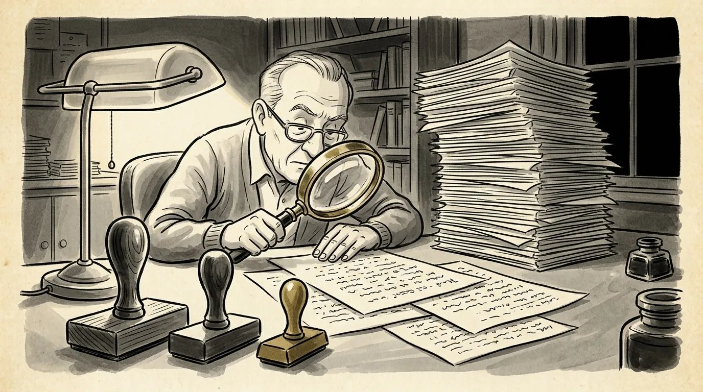

Screenplay coverage example: what a studio reader's report looks like
Here's a complete sample coverage report for a fictional script, laid out the way a development department would do it, and what each section is really telling you.


What a screenplay coverage example shows you
A screenplay coverage example shows you exactly what a studio reader hands an executive about your script: a header, a logline, a synopsis, comments, a ratings grid and a verdict. It usually runs three to five pages, and the executive often reads it instead of the script.
I've explained what coverage is and why it exists in my post on script coverage. This one is practical. Below is a complete sample report for a screenplay I made up, laid out the way a development department would lay it out. After it, I walk through each section: what it's telling the writer, and what it's telling the executive that it doesn't say out loud.
Formats vary from company to company. Some use a checklist of four grades, some add a budget estimate, some split the verdict between script and writer. A coverage template shared by Duke's entertainment alumni network, for example, rates eight categories and gives separate verdicts for the writer and the project. The sample below uses the most common pieces.
A sample coverage report
This is a fictional example. The script, the writer and the company don't exist. I invented them so you can see a full report without anyone's real work on the table.
Fictional example. Not a real script, writer or company.
Coverage: Salt Line
- Title
- Salt Line
- Writer
- Sam Sample (fictional)
- Genre
- Thriller
- Pages
- 114
- Setting
- Present day; the Outer Banks, North Carolina
- Submitted by
- Placeholder Management (fictional)
- Draft date
- March 2026
- Budget
- Medium
Logline
When a hurricane strands her on a barrier island with the smuggler she once failed to save, a grounded Coast Guard rescue swimmer has one night to get him to the mainland before the crew he betrayed finds them first.
Synopsis
NORA VALE (30s) was the best rescue swimmer at her Coast Guard station until a botched night rescue left a teenager dead and her grounded. Two years later she runs a bait shop on Hatteras Island and drinks too much. As a Category 4 hurricane closes in, she ignores the evacuation order.
During the storm she pulls a half-drowned man from the surf: CAL REESE (40s), the smuggler whose boat she was trying to reach the night of the failed rescue. Cal has turned informant, and his former crew, led by the calm, frightening DUKE MARROW, wants him dead before he testifies.
With the bridge closed and the power out, Nora and Cal move north up the island, from a flooded motel to a lighthouse to an abandoned fishing pier, with Duke's men closing in. Along the way Nora learns that Cal's boat ran dark that night on Duke's orders, and that the teenager she couldn't save was Duke's nephew.
At the pier, Nora gets Cal into a skiff and makes the open-water swim she couldn't make two years ago, towing the boat through the surf as the eye passes. Duke follows and drowns. At dawn a Coast Guard helicopter finds them. Cal testifies. Nora returns to the station, not as a swimmer but as an instructor.
Comments
Premise. A strong, castable hook. A disgraced rescuer, a storm with a clock on it and a man she has every reason to let drown is a clean genre engine, and the contained setting keeps the budget sensible.
Structure. The first act is tight; the storm and Cal both arrive by page 25. The second act loses momentum. The motel, lighthouse and pier sequences repeat the same beat (hide, get found, run), and the midpoint reveal about Duke's nephew lands on page 71, too late to change how we see the chase. The climax delivers.
Character. Nora is a strong lead role with a clear wound. Cal is underwritten: we're told he has changed but never see him make a choice that costs him something. Duke is the most vivid character in the script and needs more pages.
Dialogue. Lean and functional, sometimes sharp. Nora's guilt is stated outright in two scenes (pp. 44, 88) where it would play stronger unspoken.
Marketability. Contained survival thrillers with a strong female lead have a clear audience, and the Nora role could attract talent. The weather work is a real cost, but the single location helps.
Summary. A promising genre script with a good lead role and a saggy middle. The writer understands set pieces and pace. Not ready to take out, but worth tracking.
Ratings
| Element | Excellent | Good | Fair | Poor |
|---|---|---|---|---|
| Premise | ✓ | |||
| Structure | ✓ | |||
| Characterization | ✓ | |||
| Dialogue | ✓ | |||
| Marketability | ✓ |
Verdict
- Script
- Pass
- Writer
- Consider
The header and logline: the first impression
The header tells the executive what kind of movie this is and what it might cost before they read a word of story. Genre, page count, setting and budget are filters. A 140-page period epic and a 95-page contained horror film are different conversations.
Two things in the header are worth checking on your own script. First, page count: the sample's 114 pages raises no eyebrows, but a long draft gets noticed before anything else does. Second, "submitted by." In a real report that's an agent, manager or producer, and it tells the executive how much the submission matters to someone they work with.
Then the logline. This is the reader's logline, not yours. If the reader had to work to find your story in one sentence, the executive gets a weaker version of it. Write a logline good enough that the reader just copies it down. (Here's how to write a logline that survives that trip.)
What the synopsis tells you
The synopsis is a stranger retelling your story, and it shows you which parts registered. Read it as a mirror. Whatever the reader leaves out probably didn't land.
Notice what's missing from the sample synopsis: almost nothing happens between the motel and the pier except running. That compression is a diagnosis in itself. When a reader summarizes forty pages in one sentence, those forty pages aren't doing enough. The same goes for a subplot you love that never appears in the synopsis, or a character who shows up only by name.
Also notice that the synopsis gives away the ending. It always does. Coverage is for buyers, and a buyer needs to know how the story resolves.
Reading the comments between the lines
The comments are where the reader explains the verdict, and the polite phrasing usually hides the real problem. Readers write for their boss, so they're brief and diplomatic. You have to translate.
- "The second act loses momentum" means the reader's attention drifted. Look at the pages they mention, then look for repetition: the same kind of scene, the same emotional beat, played more than once.
- "Underwritten" means a character is serving the plot and not making choices of their own. Cal in the sample is a package to be delivered.
- "Needs more pages" about a supporting character is a compliment and a warning. That character has energy the lead doesn't, so make sure your protagonist is still driving the story.
- Specific page numbers mean the reader was paying close attention. Take those notes seriously.
- "Worth tracking" in the summary means "remember this writer," which is a bigger deal than it sounds.
A good reader names the problem and stops there. Fixing it is the writer's job. That's why coverage written for a buyer only goes halfway for a writer: it tells you the second act sags, not how to make it work.
The ratings grid: what the checkmarks mean
The ratings grid is the fastest read in the report: a busy executive can see the shape of a script from five checkmarks. Excellent, good, fair or poor, one per row.
Read the grid as a pattern, not a scorecard. The sample shows the most common shape for a script that's close: an excellent premise with weaker execution. That pattern says the idea can sell and the draft can't, yet. The reverse, fair premise and good everything else, usually means a capable writer working on the wrong idea, and that's a harder fix.
Some companies add a 1-to-10 overall score or extra rows for title, visuals or budget. Don't read too much into the difference between "good" and "excellent." Pay attention to anything marked fair or poor. That's the row that decided the verdict.
Pass, consider, recommend: reading the verdicts
The script verdict says whether this draft should move forward; the writer verdict says whether this writer should. The verdict scale itself, pass, consider or recommend, is covered in my coverage post, so here I'll focus on how to read a split.
The sample's "pass on the script, consider on the writer" is one of the most useful results a writer can get. It means this draft isn't going anywhere, but the reader thinks you can write. In practice that can lead to a general meeting, a request for your next script, or a place on someone's list of writers for assignments. Some companies use finer grades, such as weak consider and strong consider, and the same logic applies.
A pass on both is the most common result, and it's information, not a judgment on your future. A consider on the script means a real problem stands between the draft and a deal. A recommend is rare, and you'll know it when it happens because people start calling.
How my coverage is different: it's a conversation
I don't send a written report like the sample above. I read every page myself, then give you coverage verbally on a live Zoom or phone call. The call covers the same ground, from premise and structure to character, dialogue and marketability, plus where your script would land on an executive's desk.
The difference is what happens after the diagnosis. A written report would tell Sam Sample that the second act sags and stop. On a call, we'd talk about why: which sequences repeat, whether the reveal about Duke's nephew should move earlier, what choice Cal could make that costs him something. You can push back, explain what you intended, and test a fix while we're talking.
Record the call so you have every word. You leave with a plan for the next draft, not a document to decode. For more on getting the most out of that conversation, read how to take script notes without losing your voice.
A written report tells you where the script stands. The conversation is where you figure out what to do about it.
Frequently asked questions
What does a screenplay coverage report include?
Most coverage reports include a header with title, writer, genre, page count and setting, a logline, a synopsis, comments on premise, structure, character, dialogue and marketability, a ratings grid, and a verdict of pass, consider or recommend.
How long is script coverage?
Studio-style coverage usually runs three to five pages: about a page or two of synopsis and a page or so of comments, plus the header, ratings and verdict.
What does pass on the script, consider on the writer mean?
It means the draft isn't ready to move forward, but the reader thinks the writer has real ability. It's one of the most encouraging results a newer writer can get.
Do you send a written coverage report like this sample?
No. I read every page myself and give coverage verbally on a live Zoom or phone call. You can record the call and ask questions as we go.
How much do your screenplay notes cost?
Feature screenplay notes are $600, including a full read and a two-hour call. TV pilot notes are $400, with a call of up to two hours.